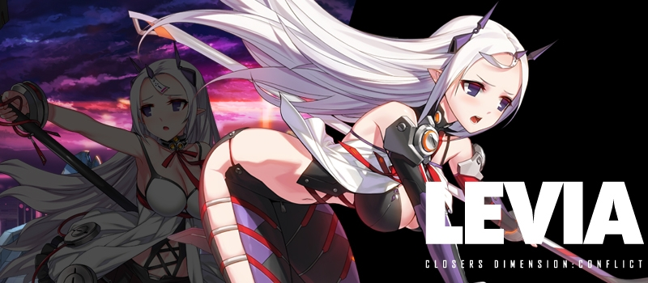
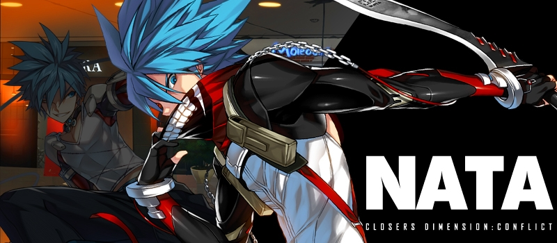
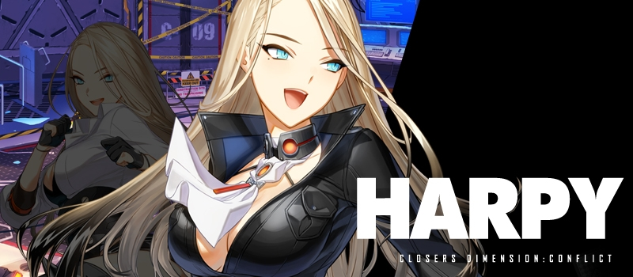
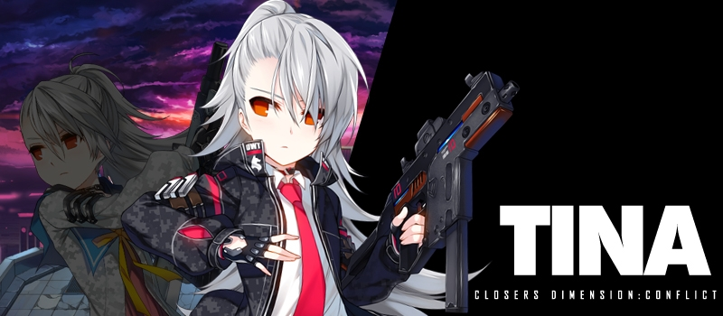

WOLF DOG

Wolf DOG memiliki 4 anggota, diantaranya :
1. Levia : Witch
Levia adalah karakter yang mirip dengan Mistel dan Seulbi. Karena sama sama memiliki kelebihan di Magical Attack. Karakter ini menggunakan sebuah Sabit.
2. Nata : Hunter
Nata adalah karakter yang sangat menyeramkan dari penampilannya dan cara bertarungnya. karakter Nata menggunakan senjata yang mirip dengan pisau yang besar di tangan kanan dan tangan kirinya serta di ikat antara keduannya menggunakan rantai.
3. Harpy : Rogue
Harpy adalah karakter wanita yang bertarung menggunakan cara unik. Karakter ini menggunakan Senjata di kaki kanannya untuk menyerang. Type serangan karakter ini adalah Physical Attack.
4. Tina : Arms
Tina adalah karakter wanita yang bertarung menggunakan senjata api sekaligus menggunakan keahlian tubuhnya. Karakter ini memiliki ukuran tubuh yang kecil. Tipe serangan karakter ini adalah Physical Attack.
